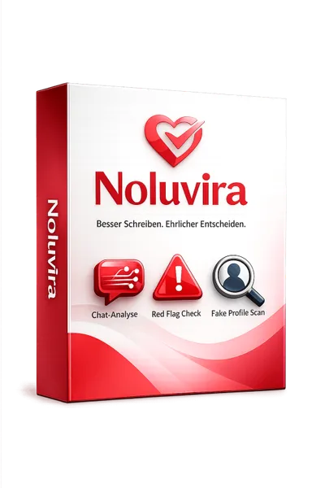

Billfix (Windows) – E-Rechnung ohne Abo | Einstieg 149 €, 30
Produktprofil · Marktplatz-Daten 2026-10-14 · Verkaufsseiten-Recherche 2026-10-14 · Kategorien: Software, Finances
- Billfix (Windows) – E-Rechnung ohne Abo | Einstieg 149 €, 30 ist ein/e Software in Software und Finances, vertrieben über den Digistore24-Marktplatz von Anbieter pelcita, gelistet seit 2026-07-07.
- Listenpreis $222.64 (single payment) — Checkout, Auslieferung und Rückerstattungen laufen über Digistore24 selbst, nicht über den Anbieter.
- Käuferschutz: keine standardisierte Garantie-Formulierung gefunden — Rückerstattungsbedingungen vor der Zahlung auf der offiziellen Seite prüfen.
Interesse an Billfix (Windows) – E-Rechnung ohne Abo | Einstieg 149 €, 30? Aktueller Preis, Boni und Garantiebedingungen finden Sie auf der offiziellen Seite des Anbieters:
Offizielle Verkaufsseite ansehen
Affiliate-Link (Werbung) — wir verdienen ggf. eine Provision, ohne Mehrkosten für Sie.
Marktplatz-Daten
| Produkttyp | Software |
|---|---|
| Preis | $222.64 (Single payment) |
| Garantie/Rückgabe | Laut Verkaufsseite des Anbieters — vor dem Kauf auf der offiziellen Seite prüfen |
| Anbieter | pelcita (gelistet seit 2026-07-07) |
Marktplatz-Beschreibung des Anbieters
Billfix — das Rechnungsprogramm zum Einmalkauf, ganz ohne Abo (für Windows). Warum sich das Bewerben lohnt: Aktueller Bedarf: E-Rechnungspflicht 2027/2028 im B2B — Millionen Solo-Selbstständige und Kleinbetriebe brauchen eine bezahlbare Lösung. Einstiegspreis: 149 € statt monatlicher Abo-Kosten. 100 % lokal auf dem Windows-PC — keine Cloud, kein Konto, kein Abo. Funktionsumfang: E-Rechnung nach EU-Norm EN 16931 (ZUGFeRD/XRechnung), Mahnwesen, Teilzahlungen, GiroCode, Artikelstamm, Belegablage mit Handy-Scan, Kontoauszugs-Abgleich, zwei Gewerbe. Zielgruppe: Solo-Selbstständige und Ein-Personen-Betriebe, die ihre Rechnungen selbst schreiben — Coaches, Berater:innen, Handwerk im Nebenerwerb, Freelancer.
Von der Verkaufsseite des Anbieters
Seitentitel: Billfix — E-Rechnung ohne Abo | Rechnungsprogramm zum Einmalkauf
Meta-Beschreibung: Billfix ist dein Rechnungsprogramm zum Einmalkauf: E-Rechnungen (ZUGFeRD/XRechnung), Mahnwesen, Teilzahlungen, GiroCode, Artikelstamm, Kundenkartei und der fertige Ordner fürs Steuerbüro. 100 % lokal auf deinem Windows-PC — keine Cloud, kein Konto, kein Abo.
Hauptüberschrift
Schluss mit RechnungsAbos.
Abschnitts-Überschriften
- Kommt dir das bekannt vor?
- Eine Sache. Richtig gemacht.
- So sieht eine Billfix-Rechnung aus
- In 10 Minuten einsatzbereit
- Ehrliche Antworten
- Hol dir deine Rechnungen zurück auf deinen Rechner.
Einstiegstext
Billfix ist dein Rechnungsprogramm zum Einmalkauf : gesetzeskonforme E-Rechnungen, Mahnwesen, Teilzahlungen, Bezahl-QR-Code, Artikelstamm, Kundenkartei — und auf Knopfdruck der fertige Ordner fürs Steuerbüro. 100 % lokal auf deinem PC. Keine Cloud. Kein Konto. Kein Abo.
Jetzt für 149 € sichern Einführungspreis · einmalig, zzgl. MwSt. · Windows 10/11 · Sofort-Download
Dein Rechnungsprogramm wird jedes Jahr teurer . Funktionen, die gestern drin waren, stecken heute im nächstgrößeren Tarif. Für die E-Rechnung — ab 2027/2028 im B2B Pflicht — sollst du schon wieder upgraden. Dabei schreibst du vielleicht fünf Rechnungen im Monat. Und deine sensibelsten Geschäftsdaten — wer deine Kunden sind, was du verdienst — liegen währenddessen auf dem Server eines Abo-Anbieters.
Rechne kurz mit: 10–30 € im Monat sind 120–360 € — jedes Jahr aufs Neue. Billfix kostet einmal 149 € (zzgl. MwSt.). Danach: nichts mehr.
Recherche-Methode: rohes HTML · 1560 Wörter · Qualität: rich · recherchiert am 2026-10-14. Vollständige Recherche-Datei (MD) ↗
Anwendung — laut Anbieter
Windows zeigt beim ersten Start eine blaue Warnung? Billfix ist digital signiert — Windows zeigt „HEADUPHIGH GmbH" als geprüften Herausgeber. Bei ganz neuen Programmen erscheint trotzdem manchmal die SmartScreen-Meldung: „Weitere Informationen" → „Trotzdem ausführen" — einmalig, danach nie wieder. In der Anleitung Schritt für Schritt erklärt.
Gibt es Support? Billfix ist so gebaut und dokumentiert, dass du keinen brauchst — die Anleitung beantwortet alle typischen Fragen inklusive Problemlösungen. Einen Anspruch auf Einzelsupport gibt es nicht; genau deshalb kann Billfix ein fairer Einmalkauf sein.
Weitere Bilder (von der Verkaufsseite des Anbieters)
Bilder stammen von der offiziellen Verkaufsseite des Anbieters und zeigen das Produkt, wie es beworben wird.
Gut zu wissen
- Hoher Preis: $222.64 ist eine erhebliche Ausgabe — prüfen Sie, ob es einen Zahlungsplan gibt, und vergleichen Sie zuerst die günstigeren Alternativen der Kategorie.
- Keine Garantie-Formulierung in unserer Recherche gefunden — bestätigen Sie das Rückgabefenster auf der offiziellen Seite, bevor Sie kaufen.
Was ist Billfix (Windows) – E-Rechnung ohne Abo | Einstieg 149 €, 30?
Billfix (Windows) – E-Rechnung ohne Abo | Einstieg 149 €, 30 ist ein/e software in der Kategorie Software des Digistore24-Marktplatzes, veröffentlicht von Anbieter pelcita und im Verkauf seit 2026-07-07. Der Anbieter beschreibt es so: "Billfix — das Rechnungsprogramm zum Einmalkauf, ganz ohne Abo (für Windows). Warum sich das Bewerben lohnt: Aktueller Bedarf: E-Rechnungspflicht 2027/2028 im B2B — Millionen Solo-Selbstständige und Kleinbetriebe brauchen eine bezahlbare Lösung. Einstiegspreis:" (Marktplatz-Beschreibung des Anbieters, leicht gekürzt).
Billfix (Windows) – E-Rechnung ohne Abo | Einstieg 149 €, 30 Preis: was Sie zahlen
Der Marktplatz listet Billfix (Windows) – E-Rechnung ohne Abo | Einstieg 149 €, 30 zum $222.64 Preis (single payment). Digistore24 fügt im Checkout die gesetzliche Steuer Ihres Landes hinzu — dort sehen Sie den Endbetrag vor der Zahlung. Eine separate Plattformgebühr gibt es nicht; Anbieter können eigene Upsells nach dem Checkout anbieten.
Billfix (Windows) – E-Rechnung ohne Abo | Einstieg 149 €, 30 Rückerstattung und Geld-zurück-Garantie
Wir haben keine standardisierte Garantie-Formulierung auf der Verkaufsseite gefunden. Rückerstattungen für Digistore24-Käufe laufen über die Plattform: Antrag über den Support-Link in Ihrer Bestell-E-Mail, innerhalb des Garantiezeitfensters, das im Checkout angezeigt wird. Praktischer Rat: Entscheiden Sie innerhalb des Fensters — wenn das Produkt unter den Erwartungen bleibt, erstatten lassen statt irren lassen.
Mechanik im Detail: So funktionieren Digistore24-Rückerstattungen.
Für wen ist Billfix (Windows) – E-Rechnung ohne Abo | Einstieg 149 €, 30 geeignet?
Basierend auf der Software-Einordnung und der single payment-Abrechnung richtet sich Billfix (Windows) – E-Rechnung ohne Abo | Einstieg 149 €, 30 an Käufer, die software-Lösungen suchen und ein Budget für einen Premium-Kauf eingeplant haben. Der ehrliche Test ist nicht die Kategorie, sondern Ihre eigene Situation: Werden Sie es realistisch innerhalb des Garantiefensters nutzen? Wenn ja, ist der Preis eine Investition; wenn nein, ist er Ballast — unabhängig von der Qualität.
Ist Billfix (Windows) – E-Rechnung ohne Abo | Einstieg 149 €, 30 seriös? Was Sie vor dem Kauf prüfen
Wir bewerten keine Seriosität — das kann niemand, ohne das Produkt zu nutzen. Prüfbare Punkte, alle auf dieser Seite: die Marktplatz-Historie des Anbieters (im Verkauf seit 2026-07-07), die wörtlichen Verkaufsseiten-Auszüge unten (gekennzeichnet als Anbieteraussagen — deren Werbung, nicht unsere Empfehlung), die Garantiebedingungen im Checkout und die Auslieferungsart. Vorsichtsignale bei jedem Angebot: Countdown-Dringlichkeit gepaart mit vagen Rückerstattungsbedingungen, Testimonials ohne Datum und Anbieterseiten, die den Preis bis zum Checkout verstecken.
Wie kommen Sie nach dem Kauf an Billfix (Windows) – E-Rechnung ohne Abo | Einstieg 149 €, 30?
Der Checkout läuft über Digistore24. Nach der Zahlung: Software wird digital geliefert — entweder als direkter Download oder per Lizenzschlüssel/Mitgliederbereich nach dem Checkout. Bewahren Sie die Bestell-E-Mail auf — sie ist Ihr Schlüssel zum/d zur software, zu Rückerstattungsanträgen und zum Digistore24-Käufersupport.
Billfix (Windows) – E-Rechnung ohne Abo | Einstieg 149 €, 30 Erfahrungen: so recherchieren Sie richtig
Die meisten „Erfahrungsberichte" zu Marktplatz-Produkten sind Affiliate-Inhalte — einschließlich Seiten wie dieser, die an Käufen mitverdienen. Behandeln Sie jeden Bericht (auch unseren) als Ausgangspunkt und prüfen Sie gegen Primärquellen: die Verkaufsseite des Anbieters, die Digistore24-Rückerstattungsrichtlinie und — für software — unabhängige Communities außerhalb des Affiliate-Ökosystems. Auf dieser Seite sind die Verkaufsseiten-Auszüge unten wörtlich zitiert, damit Sie die Aussagen des Anbieters bewerten können, ohne wegzuklicken.
Wie Sie Billfix (Windows) – E-Rechnung ohne Abo | Einstieg 149 €, 30 sicher kaufen
- Öffnen Sie die offizielle Verkaufsseite und lesen Sie das vollständige Angebot.
- Bestätigen Sie Endpreis und Garantiezeitfenster auf der Digistore24-Kassenseite — sie ist bindend, kein Vergleichsportal.
- Zahlen Sie innerhalb des Digistore24-Checkouts (niemals per Überweisung oder Off-Platform-Links).
- Speichern Sie die Bestellbestätigung; notieren Sie die Rückerstattungsfrist im Kalender.
- Prüfen Sie zügig. Der Digistore24-Käufersupport hilft, wenn der Anbieter nicht reagiert.
Vollständiges Recherche-Archiv für dieses Produkt (Markdown: kompletter Marktplatz-Datensatz + wörtliche Verkaufsseiten-Auszüge): Billfix (Windows) – E-Rechnung ohne Abo | Einstieg 149 €, 30 — vollständiges Datenarchiv (Markdown-Datei: 57451-billfix-windows-e-rechnung-ohne-abo-einstieg-149-30.md).
- Listenpreis & Abrechnung — Quelle: offizielle Digistore24-Marktplatz-API, Stand 2026-10-14. Maßgeblich für den aktuellen Preis ist immer die Kassenseite.
- Verkaufsseiten-Zitate — Quelle: https://www.headuphigh.de/billfix, abgerufen 2026-10-14 (Methode: rohes HTML). Verify: offizielle Seite öffnen.
- Garantie / Rückgabe — vom Anbieter festgelegt; vor dem Kauf auf der Verkaufsseite bestätigen.
- Nicht von uns geprüft: Produktqualität, Ergebnisse, Testimonials — kein Praxistest für dieses Listing durchgeführt.
Häufige Fragen zu Billfix (Windows) – E-Rechnung ohne Abo | Einstieg 149 €, 30
Antworten aus dem Marktplatz-Snapshot (2026-10-14) und der Verkaufsseiten-Recherche (2026-10-14); Anbieteraussagen sind inline gekennzeichnet.
Was ist Billfix (Windows) – E-Rechnung ohne Abo | Einstieg 149 €, 30?
Billfix (Windows) – E-Rechnung ohne Abo | Einstieg 149 €, 30 ist ein Angebot des Typs „Software" im Digistore24-Marktplatz, Anbieter: pelcita, gelistet seit 2026-07-07. Eingepflegt unter Software und Finanzen. Digistore24 wickelt Checkout, Lieferung und Rückgaben ab.
Wie viel kostet Billfix (Windows) – E-Rechnung ohne Abo | Einstieg 149 €, 30?
Der Digistore24-Marktplatz listet es für $222.64 (single payment). Preise legt der Anbieter fest und können sich ändern — der Marktplatz-Eintrag oben zeigt den Schnappschuss; die offizielle Verkaufsseite zeigt den aktuellen Preis.
Gibt es eine Geld-zurück-Garantie für Billfix (Windows) – E-Rechnung ohne Abo | Einstieg 149 €, 30?
Unsere Verkaufsseiten-Recherche hat keine explizite Garantie-Formulierung gefunden. Viele Digistore24-Produkte bieten 60 Tage Geld-zurück, aber das legt jeder Anbieter selbst fest — bestätigen Sie es auf der offiziellen Verkaufsseite, bevor Sie kaufen.
Ist Billfix (Windows) – E-Rechnung ohne Abo | Einstieg 149 €, 30 seriös?
Wir bewerten keine Seriosität — wir veröffentlichen überprüfbare Zahlen: Anbieter pelcita (gelistet seit 2026-07-07), mit der vollständigen Verkaufsseiten-Recherche archiviert auf dieser Seite (Anbieteraussagen als solche gekennzeichnet). Lesen Sie unsere 6-Punkte-Bewertungsmethode und entscheiden Sie anhand der Zahlen — oder diskutieren Sie Billfix (Windows) – E-Rechnung ohne Abo | Einstieg 149 €, 30 auf GitHub.
Wo kann ich Billfix (Windows) – E-Rechnung ohne Abo | Einstieg 149 €, 30 sicher kaufen?
Nur über die offizielle Verkaufsseite, die auf dieser Seite verlinkt ist (Checkout und Rückgaben laufen über Digistore24). Prüfen Sie dort Preis und Garantie vor der Bestellung. Der Link ist ein Affiliate-Link — der Kauf unterstützt diese Website ohne Mehrkosten für Sie.
Wie erhalte ich Billfix (Windows) – E-Rechnung ohne Abo | Einstieg 149 €, 30 nach der Zahlung?
Der Checkout läuft über Digistore24: Nach der Zahlung erhalten Sie Ihren Zugang oder Download per E-Mail und in Ihrem Digistore24-Kundenkonto. Lieferdetails für diesen Produkttyp: Software wird digital geliefert — entweder als direkter Download oder per Lizenzschlüssel/Mitgliederbereich nach dem Checkout. Bei Problemen kann der Digistore24-Käufersupport Ihre Bestellung wiederherstellen.
Alle 50 Käuferfragen zu Software — das komplette Kategorie-FAQ.
Billfix (Windows) – E-Rechnung ohne Abo | Einstieg 149 €, 30 auf Reddit diskutieren
In Community-Threads vergleichen echte Käufer Erfahrungen. Wir verlinken Communities, keine einzelnen Posts — Threads verschwinden, Subreddits bleiben:
- r/Finanzen — deutschsprachige Community mit Diskussionen zu software.
- Reddit-Suche nach „Billfix (Windows) – E-Rechnung ohne Abo | Einstieg 149 €, 30" — Live-Ergebnisse, von uns nicht beeinflusst.
- Top-„Erfahrungs"-Treffer dieses Jahr — selbst nach Aktualität filtern.
Passendes auf Amazon.de
Physische Produkte und Zubehör, die häufig zusammen mit Billfix (Windows) – E-Rechnung ohne Abo | Einstieg 149 €, 30 gekauft werden:
- Software auf Amazon.de — Top-Ergebnisse, Amazon-Ranking.
- Bestseller: Software — live Liste von Amazon, von uns nicht kuratiert.
Werbung: Als Amazon-Partner verdient DigistorePicks DE an qualifizierten Käufen (Partner-tag adminstorede-21). Amazon setzt eigene Preise und Provisionen (niedrige einstellige Prozente — weit unter den 30–75% der Digistore24-Anbieter). Amazon ist ein Convenience-Angebot für Sachprodukte, kein Ersatz für das digitale Produkt oben.
Ähnliche Angebote in Software

Maya: digitale Assistentin für WhatsApp und Telefon Maya beantwortet Kundenanfragen kleiner Betriebe rund um die Uhr auf WhatsApp und im Paket mit Telefon auch

Zencaptcha schützt Webseiten vor Spam und betrügerischen Aktivitäten. Falsche und temporäre E-Mail-Adressen werden erkannt und Bots werden herausgefordert, noch

+++ Willkommen beim Meisterbot-Partnerprogramm! +++ Verdienen Sie über 850 EUR Provision pro Sale mit der ersten schlüsselfertigen KI-Telefonzentrale für den Mi

Verdienen Sie 40 % Provision! Werden Sie Affiliate und profitieren Sie von unserem attraktiven 40% Partnerprovisionssatz – eine der höchsten Provisionen auf Dig
Billfix (Windows) – E-Rechnung ohne Abo | Einstieg 149 €, 30 ist auch gelistet in
Finanzen (84 Produkte)
Ähnliche Preislage in Software
Bewirb kontaktkarte.com und verdiene eine attraktive 50%-Lifetime-Provision mit einer modernen Lösung für digitale Visitenkarten. Eigene Domain, individuelle Pr

Hallo Lieber Affiliate Wenn du diesen Kurs bewirbst, darfst du dich auf 50% Provision freuen :-) Besuche über den Link gerne auch meine Affiliate Support Seite,

Verdiene jeden Monat wiederkehrende Provisionen mit einer der spannendsten KI Anwendungen im DACH Markt. Noluvira verbindet Künstliche Intelligenz mit einem der

Fertiges Pre-Sale Page System für Affiliates – ideal zur besseren Monetarisierung von Content und E-Mail-Klicks Das Pre-Sale Page System ist perfekt für Affilia
Ähnliche Suchanfragen
Wo Sie es sich ansehen können
Wo Sie es sich ansehen können
Aktuelle Preise, Garantie und Boni finden Sie auf der offiziellen Verkaufsseite:
Offizielle Verkaufsseite ansehen
Das ist ein Affiliate-Link (Werbung) — kaufen Sie darüber, verdienen wir ggf. eine Provision, ohne Mehrkosten für Sie.
Quellen & weiterführende Informationen
- Offizielle Verkaufsseite (aktueller Preis, Garantie, Boni): www.headuphigh.de/billfix (Affiliate-Link)
- Öffentliche Digistore24-Produktseite: checkout-ds24.com/product/708969
- Vollständige Recherche-Datei (Markdown, versioniert): content/products/57451-billfix-windows-e-rechnung-ohne-abo-einstieg-149-30.md
- Marktplatz-Kategorie: Software
Wie wir Produkte wie Billfix (Windows) – E-Rechnung ohne Abo | Einstieg 149 €, 30 bewerten
Sechs Prüfungen, ausschließlich mit offiziellen Marktplatz-Zahlen. Die vollständige Bewertungsmethode lesen · unsere Recherche-Standards & Kennzeichnung.
Fragen oder eigene Erfahrungen mit Billfix (Windows) – E-Rechnung ohne Abo | Einstieg 149 €, 30?
Praxis-Tests veröffentlichen wir erst, nachdem wir ein Produkt selbst gekauft haben — aber Ihre Erfahrung hilft anderen Lesern: Diskussion zu Billfix (Windows) – E-Rechnung ohne Abo | Einstieg 149 €, 30 auf GitHub starten/verfolgen. Falsche Zahl gefunden? Korrektur melden — jede Seite zeigt ihre Datenstände, Korrekturen gelten für die ganze Website.